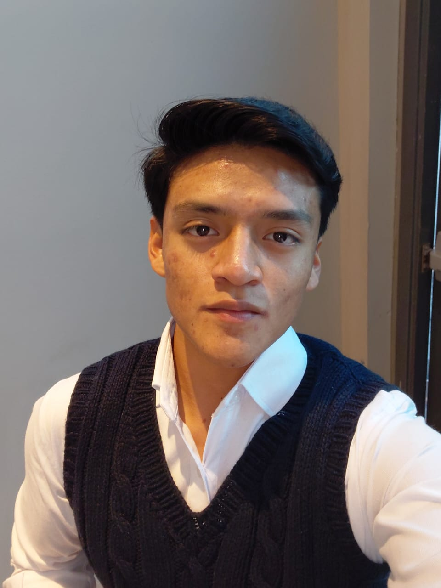

Sobre Mí
Estudiante apasionado por la tecnología y el desarrollo
Un poco de mi Historia
Hola, mi nombre es Josué y tengo 18 años. Actualmente soy estudiante de 6to. Perito en Informática en Kinal.
Desde pequeño me ha fascinado la tecnología y cómo funciona el mundo digital. Mi interés por la programación comenzó cuando descubrí el potencial de crear soluciones a través del código y la lógica computacional. Además, me apasiona la ciberseguridad y el poder proteger diferentes sistemas de los hackers que existen en la red. Desde entonces, he estado constantemente aprendiendo y mejorando mis habilidades.
Fuera del ámbito académico, disfruto de los videojuegos, la música, los cubos de rubik, mi patineta y los carros. También me gusta explorar nuevas tecnologías y pasar tiempo con mi familia y amigos.
Una de mis mayores fortalezas es la resolución de problemas y el pensamiento lógico, y constantemente busco desafíos que me permitan crecer tanto personal como profesionalmente.
Expectativas para este Año Educativo
Aprendizaje Profundo
Este año espero profundizar mis conocimientos en desarrollo web, especialmente en tecnologías como HTML, CSS, JavaScript y frameworks modernos. Mi objetivo es crear proyectos cada vez más complejos y funcionales.
Metas Académicas
Aspiro a mantener un promedio académico de 95 puntos o superior. Quiero destacar en las materias de programación y desarrollo de software, y completar todos mis proyectos con excelencia.
Colaboración
Deseo mejorar mis habilidades de trabajo en equipo, participando activamente en proyectos grupales y ayudando a mis compañeros cuando lo necesiten. La colaboración es clave en el desarrollo de software.
Innovación
Me propongo pensar fuera de la caja y buscar soluciones creativas a los problemas. Quiero desarrollar proyectos que no solo cumplan con los requisitos, sino que también aporten valor e innovación.
Mi Planificación de Estudio
Distribución de Tiempo Semanal
Mi Metodología de Estudio
- Tomar apuntes detallados durante las clases
- Practicar código todos los días, al menos 1 hora
- Investigar temas adicionales relacionados con las materias
- Ver tutoriales y documentación oficial
- Establecer metas semanales y revisarlas
- Resolver ejercicios de plataformas web que ofrezcan práctica
Habilidades que Deseo Adquirir
Habilidades Técnicas
- ✓ Dominio avanzado de JavaScript
- ✓ React.js y otros frameworks modernos
- ✓ Node.js y desarrollo backend
- ✓ Bases de datos (SQL y NoSQL)
- ✓ Git y control de versiones
- ✓ Desarrollo de APIs REST
- ✓ Responsive Design y UX/UI
Habilidades Blandas
- ✓ Comunicación efectiva en equipo
- ✓ Gestión del tiempo y organización
- ✓ Resolución de problemas complejos
- ✓ Pensamiento crítico y analítico
- ✓ Adaptabilidad a nuevas tecnologías
- ✓ Liderazgo y toma de decisiones
- ✓ Presentaciones y exposiciones
Información Adicional
Cursos y Certificaciones
Planeo obtener certificaciones en plataformas como Platzi, Udemy y FreeCodeCamp para complementar mi formación académica y tener un perfil más competitivo.
Proyectos Personales
Tengo la meta de desarrollar al menos 3 proyectos personales este año, incluyendo portafolios web, aplicaciones interactivas y sistemas de gestión, para aplicar lo aprendido de forma práctica.
Networking
Quiero conectar con otros desarrolladores, participar en comunidades online, asistir a eventos de tecnología y crear mi presencia profesional en LinkedIn y GitHub.
Lectura Técnica
Me comprometo a leer al menos 2 libros técnicos o artículos especializados sobre desarrollo de software, buenas prácticas y nuevas tendencias tecnológicas.